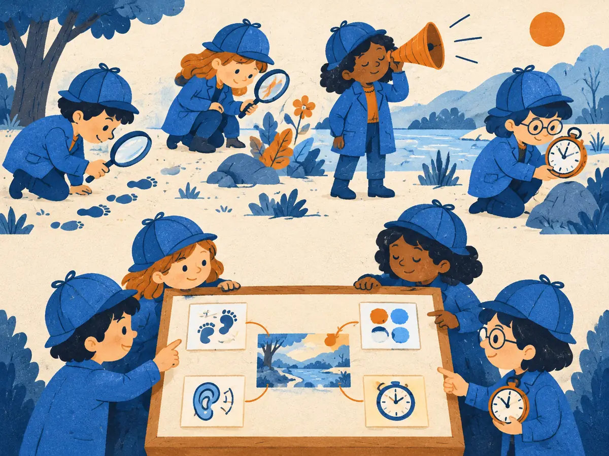

Multi-head attention
One attention head gives each token one set of weights, so it can only take one blended look at the sentence. Real transformers run many smaller heads side by side, each free to look for something different. Surprisingly, this costs no extra parameters.
By the end you can
- Walk through multi-head attention: split into heads, attend, concatenate, project with $W_O$.
- Work out every shape, and show the parameter count is the same as one big head.
- Explain what grouped-query and multi-query attention share, and why that matters for generation.
Guess first. A wrong guess now makes the right answer stick.
A model has vectors of size $d_{\text{model}} = 512$ and 8 attention heads. How long is each head's query vector, typically?
- 512, the same as the model
- 64
- 8
- 4,096
Going from 1 attention head to 8 heads, with the same $d_{\text{model}}$, multiplies the attention layer's parameter count by about…
- 8
- 64
- 1, so no change
- 1/8
One head, one blend
In M1.1, “bank” in “I sat by the river bank” put 0.60 of its attention on river. That's one softmax, so the weights must sum to 1, and the output is one weighted average of the values.
But a word usually needs several kinds of context at once. For “bank” it helps to know the topic (river), the preposition that governs it (by) and the verb of the sentence (sat). With one head these relations compete for the same 100% of weight, and whatever gets averaged together is blurred. The original paper puts it as: with a single head, “averaging inhibits” attending to different kinds of information at different positions.
The fix is to run several attentions in parallel, each with its own learned $W_Q$, $W_K$, $W_V$, so each can learn its own notion of “relevant”.
Split, attend, concatenate, mix
With $h$ heads, each head works in a smaller space of size $d_k = d_{\text{model}} / h$:
$$\mathrm{head}_i = \mathrm{Attention}\!\left(XW_Q^{(i)},\; XW_K^{(i)},\; XW_V^{(i)}\right),\quad i = 1,\dots,h$$ $$\mathrm{MultiHead}(X) = \mathrm{Concat}(\mathrm{head}_1, \dots, \mathrm{head}_h)\,W_O$$Vaswani et al., 2017, “Attention Is All You Need”. They used $d_{\text{model}} = 512$, $h = 8$, $d_k = 64$.
- $X$ is the $n \times d_{\text{model}}$ matrix of token vectors, one row per token.
- $W_Q^{(i)}, W_K^{(i)}, W_V^{(i)}$ are head $i$'s own learned matrices, each $d_{\text{model}} \times d_k$.
- $\mathrm{Attention}$ is exactly M1.1's $\mathrm{softmax}(QK^\top/\sqrt{d_k} + M)V$, run separately per head. Each head outputs $n \times d_k$.
- $\mathrm{Concat}$ glues the $h$ outputs side by side: back to $n \times d_{\text{model}}$.
- $W_O$ is a learned $d_{\text{model}} \times d_{\text{model}}$ output projection that mixes the heads' results.
In code nobody loops over heads. You compute $Q = XW_Q$ with one big $d_{\text{model}} \times d_{\text{model}}$ matrix, then reshape $Q$ from $(n, d_{\text{model}})$ to $(n, h, d_k)$ and move the head axis first, giving $(h, n, d_k)$. One batched matrix multiply then computes all $h$ score matrices, each $n \times n$, at once. Head $i$'s $W_Q^{(i)}$ is simply columns $i \cdot d_k$ to $(i+1) \cdot d_k - 1$ of the big $W_Q$.
Explain like I'm 5

Four little detectives walk into the same room. One only looks for footprints, one for fingerprints, one for dropped notes, one just takes in the whole scene.
Each detective writes down what they found. Then they pin all their notes on one big board, and the chief reads the board to understand the whole story.
The detectives are the heads; the board is the concatenation and $W_O$. Where it breaks: nobody tells real heads what to look for. Their jobs emerge during training and are often messy and overlapping.
Same parameters, same compute
Count the weights. Each head has three $d_{\text{model}} \times d_k$ matrices, and there are $h$ heads, so the queries, keys and values use $3 \cdot h \cdot d_{\text{model}} \cdot d_k = 3\,d_{\text{model}}^2$ numbers. Add $W_O$:
$$\text{attention parameters per layer} = 4\,d_{\text{model}}^2 \quad (\text{ignoring biases})$$That does not depend on $h$. The score computation is also the same size: $h$ heads each do $n^2 \cdot d_k$ multiply-adds, which totals $n^2 \cdot d_{\text{model}}$, just like one wide head. What you gain is $h$ separate attention patterns. What you give up is width per head: each head compares queries and keys in only $d_k$ dimensions. In practice $d_k$ is usually 64 or 128.
Worked example
The original transformer: $d_{\text{model}} = 512$, $h = 8$, and a sequence of $n = 10$ tokens.
- Head size: $d_k = 512 / 8 = 64$.
- Queries: $Q = XW_Q$ is $(10 \times 512)(512 \times 512) = 10 \times 512$, reshaped to $8$ heads of $10 \times 64$. Same for $K$ and $V$.
- Scores: per head $(10 \times 64)(64 \times 10) = 10 \times 10$, divided by $\sqrt{64} = 8$. Eight of these.
- Outputs: each head gives $10 \times 64$; concatenated, $10 \times 512$; times $W_O$ $(512 \times 512)$, still $10 \times 512$.
- Parameters: $4 \times 512^2 = 1{,}048{,}576$, the same as a single 512-wide head.
An attention layer shaped like Llama 2 7B's: $d_{\text{model}} = 4096$ with $h = 32$ heads.
- Head size $d_k =$
- Each head's scores are divided by $\sqrt{d_k} \approx$
- Attention parameters per layer, in millions:
- Now use grouped-query attention with 8 K/V heads (as Llama 3 8B does). $W_K$ becomes $4096 \times (8 \cdot 128)$. Its parameters, in millions:
What do heads actually learn?
Nobody assigns roles. Each head's matrices start random and are shaped by gradient descent like every other weight. Researchers then look at trained models and find some recognisable patterns:
- Positional heads that mostly attend to the previous token, or a fixed offset.
- Syntactic heads: in BERT, some heads track relations such as a verb's direct object or a noun's determiner surprisingly well (Clark et al., 2019, “What Does BERT Look At?”).
- Induction heads: having seen “… A B … A”, they attend to the earlier B and help predict it again. They appear to drive much of in-context copying (Olsson et al., 2022).
Treat these stories with care. Many heads can be pruned with little loss in quality (Michel et al., 2019, “Are Sixteen Heads Really Better than One?”; Voita et al., 2019), so heads are often redundant. Most heads don't have one clean job. And high attention weight is not a reliable explanation of why a model made a prediction (Jain & Wallace, 2019, “Attention is not Explanation”).
Sharing keys and values: MQA and GQA
When a model generates text it keeps every past token's keys and values in memory, the KV cache (M1.5). With standard multi-head attention (MHA) that's one key and one value vector per head per token per layer, and reading it all back each step becomes the bottleneck.
- Multi-query attention (MQA) keeps many query heads but just one shared key/value head (Shazeer, 2019, “Fast Transformer Decoding: One Write-Head is All You Need”). The cache shrinks by a factor of $h$, at some cost in quality. PaLM used it.
- Grouped-query attention (GQA) is the middle ground: query heads are split into groups, and each group shares one K/V head (Ainslie et al., 2023). Llama 2 70B uses 64 query heads with 8 K/V heads; Llama 3 8B and Mistral 7B use 32 with 8. In the GQA paper's experiments, quality stayed close to full MHA.
Only $W_K$ and $W_V$ shrink: they map to $n_{\text{kv}} \cdot d_k$ columns instead of $h \cdot d_k$. The queries, and therefore the number of different attention patterns, stay the same.
Explain to a friend why a transformer uses several small heads instead of one big one, and why that doesn't add parameters.
GPT-2 small has $d_{\text{model}} = 768$ and 12 heads. What is $d_k$?
- 768
- 64
- 12
- 9,216
In a model with $d_{\text{model}} = 4096$ and 32 heads, what are each head's attention scores divided by? (Think back to M1.1.)
- $\sqrt{4096} = 64$
- 32, the number of heads
- $\sqrt{128} \approx 11.3$
- Nothing; scaling is only for single-head attention
What does the output projection $W_O$ do?
- Mixes the concatenated head outputs, so information from every head can reach every dimension of the result
- Averages the heads' attention weights into one pattern
- Picks the single most useful head for each token
- Applies the causal mask
In grouped-query attention, what is shared within a group of heads?
- The queries
- The attention weights
- The output projection
- The key and value projections, which shrinks the KV cache
Key takeaways
- One head = one softmax = one blended view. Multiple heads let a token attend to several things at once.
- Split $d_{\text{model}}$ into $h$ heads of $d_k = d_{\text{model}}/h$; attend per head; concatenate; mix with $W_O$.
- Parameters ($4\,d_{\text{model}}^2$) and score compute are the same as one wide head.
- Heads sometimes show interpretable roles (previous token, syntax, induction), but many are redundant and roles are rarely clean.
- GQA/MQA share keys and values across query heads to shrink the KV cache; GQA is now the common default.
Build multi-head attention in NumPy: split and merge heads, check every shape, confirm the parameter count doesn't change with $h$, match PyTorch's nn.MultiheadAttention, and turn it into GQA. About 25 minutes, free, runs in your browser.
Add this lesson's cards to your spaced-review deck.